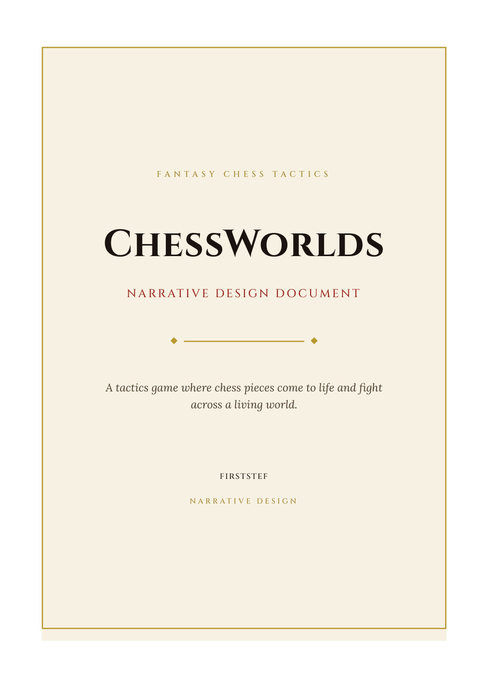
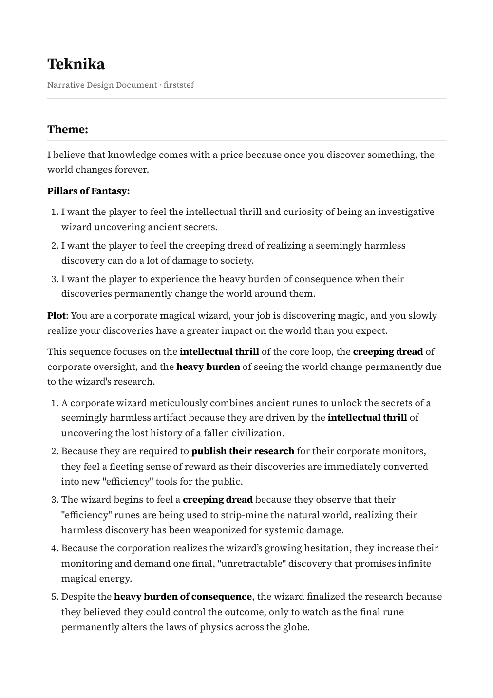
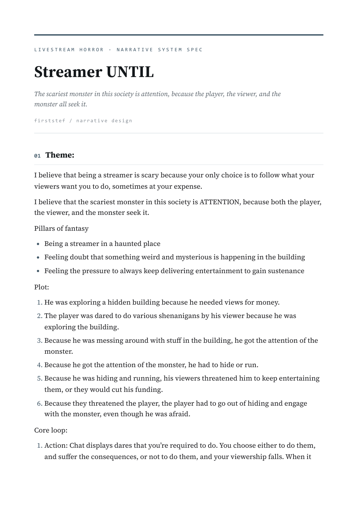
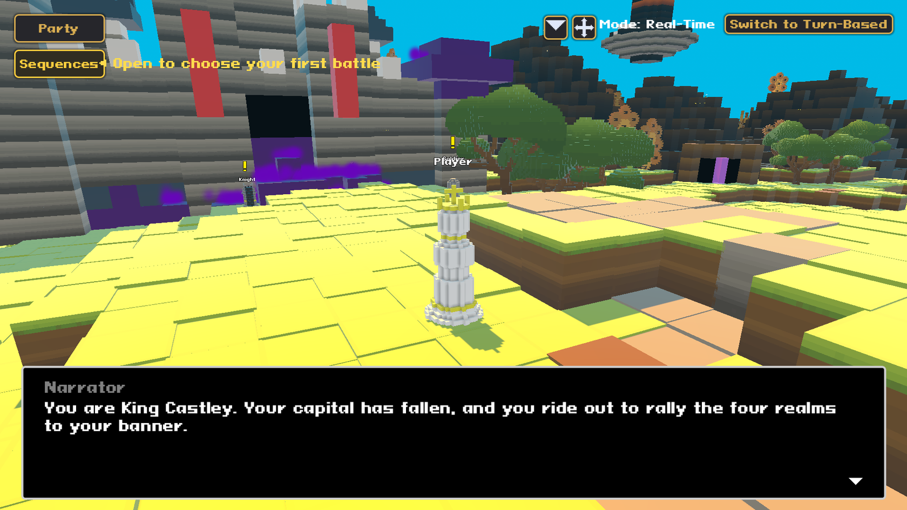
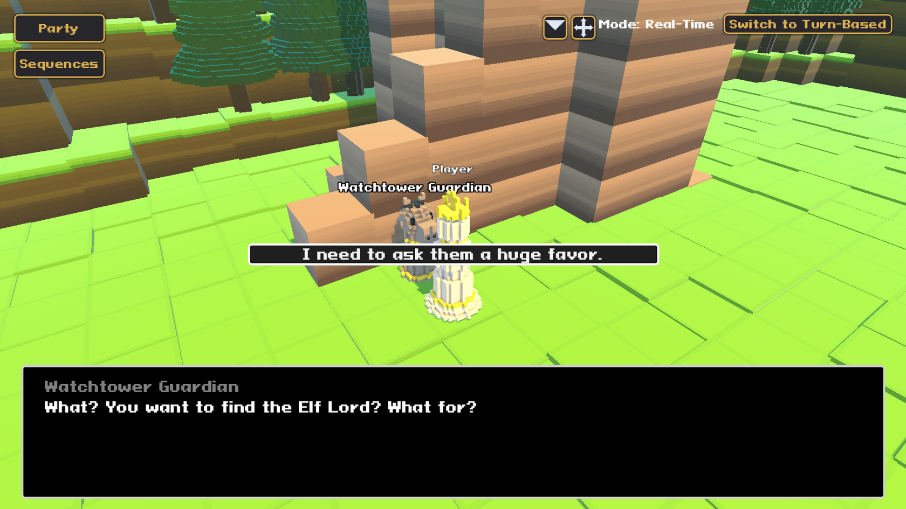

Fantasy tactics
ChessWorlds
Chess pieces come to life across four realms, and each faction's philosophy is its mechanic.
Read the documentStory as infrastructure, built alongside the systems, not layered on top. I write branching narrative and I build the engine that carries it.

Chess pieces come to life across four realms, and each faction's philosophy is its mechanic.
Read the document
A corporate wizard whose published research permanently reshapes the world. The Rule of Irreversibility as a hard system constraint.
Read the document
A livestream horror where the chat is the antagonist. The viewership meter keeps you alive and gets you killed.
Read the documentA horror game about a streamer doing urban exploration in an abandoned building.
The game needed a chat system that gives the player dares based on the environment, then reacts to what they do. I designed and implemented it: a simulated live audience whose messages move a viewership meter, and the meter sets how hard the monster hunts you.
I built a node-based chat graph editor in Unity so my non-programmer teammates could rewrite the story without touching code, and I wrote the 289 lines that run through it.

The chat graph. Each frame is a zone of the game, authored by hand.


Small games, most of them built around a world or a system I wanted to see exist.
A campaign I ran as Dungeon Master, written up as one continuous story across three arcs.